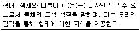
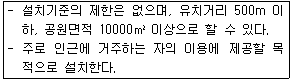
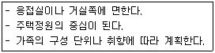
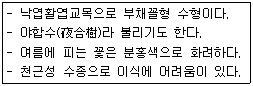
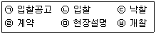
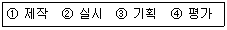
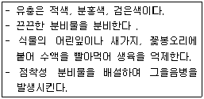

조경기능사 (2012-04-08 기출문제)
1과목: 조경일반
1. 다음 중 별서의 개념과 가장 거리가 먼 것은?
- 은둔생활을 하기 위한 것
- 효도하기 위한 것
- 별장의 성격을 갖기 위한 것
- 수목을 가꾸기 위한 것
(정답률: 67%)

2. 메소포타미아의 대표적인 정원은?
- 마야사원
- 베르사이유 궁전
- 바빌론의 공중정원
- 타지마할 사원
(정답률: 87%)
3. 조경의 직무는 조경설계기술자, 조경시공기술자, 조경관리기술자로 크게 분류 할 수 있다. 그 중 조경설계기술자의 직무내용에 해당하는 것은?
- 식재공사
- 시공감리
- 병해충방제
- 조경묘목생산
(정답률: 81%)
4. 오방색 중 황(黃)의 오행과 방위가 바르게 짝지어진 것은?
- 금(金) - 서쪽
- 목(木) - 동쪽
- 토(土) - 중앙
- 수(水) - 북쪽
(정답률: 75%)
5. 다음 보기의 ( )안에 들어갈 디자인 요소는?

- 질감
- 광선
- 공간
- 입체
(정답률: 91%)
6. 영국인 Brown의 지도하에 덕수궁 석조전 앞뜰에 조성된 정원 양식과 관계되는 것은?
- 빌라 메디치
- 보르비콩트 정원
- 분구원
- 센트럴 파크
(정답률: 70%)
7. 먼셀의 색상환에서 BG는 무슨 색인가?
- 연두색
- 남색
- 청록색
- 보라색
(정답률: 86%)
8. 중국 청나라 때의 유적이 아닌 것은?
- 자금성 금원
- 원명원 이궁
- 이화원
- 졸정원
(정답률: 78%)
9. 다음 설명에 해당하는 도시공원의 종류는?

- 어린이공원
- 근린생활권근린공원
- 도보권근린공원
- 묘지공원
(정답률: 77%)
10. 경관구성의 미적 원리를 통일성과 다양성으로 구분할 때, 다음 중 다양성에 해당하는 것은?
- 조화
- 균형
- 강조
- 대비
(정답률: 59%)
11. 정형식 배식 방법에 대한 설명이 옳지 않은 것은?
- 단식 - 생김새가 우수하고, 중량감을 갖춘 정형수를 단독으로 식재
- 대식 - 시선축의 좌우에 같은 형태, 같은 종류의 나무를 대칭 식재
- 열식 - 같은 형태와 종류의 나무를 일정한 간격으로 직선상에 식재
- 교호식재 - 서로 마주보게 배치하는 식재
(정답률: 76%)
12. [보기]와 같은 목적의 뜰은 주택정원의 어디에 해당하는가?

- 안뜰
- 앞뜰
- 뒤뜰
- 작업뜰
(정답률: 86%)
13. 주축선 양쪽에 짙은 수림을 만들어 주축선이 두드러지게 하는 비스타(vista) 수법을 가장 많이 이용한 정원은?
- 영국정원
- 독일정원
- 이탈리아정원
- 프랑스정원
(정답률: 75%)
14. 실선의 굵기에 따른 종류(굵은선, 중간선, 가는선)와 용도가 바르게 연결되어 있는 것은?
- 굵은선 - 도면의 윤곽선
- 중간선 - 치수선
- 가는선 - 단면선
- 가는선 - 파선
(정답률: 78%)
15. 우리나라에서 처음 조경의 필요성을 느끼게 된 가장 큰 이유는?
- 인구증가로 인해 놀이, 휴게시설의 부족 해결을 위해
- 고속도로, 댐 등 각종 경제개발에 따른 국토의 자연훼손의 해결을 위해
- 급속한 자동차의 증가로 인한 대기오염을 줄이기 위해
- 공장폐수로 인한 수질오염을 해결하기 위해
(정답률: 84%)
2과목: 조경재료
16. 다음 [보기]에서 설명하는 수종은?

- 자귀나무
- 치자나무
- 은목서
- 서향
(정답률: 78%)
17. 다음 중 화성암 계통의 석재인 것은?
- 화강암
- 점판암
- 대리석
- 사문암
(정답률: 89%)
18. 산울타리에 적합하지 않은 식물 재료는?
- 무궁화
- 측백나무
- 느릅나무
- 꽝꽝나무
(정답률: 74%)
19. 시멘트 액체 방수제의 종류가 아닌 것은?
- 염화칼슘계
- 지방산계
- 비소계
- 규산소다계
(정답률: 49%)
20. 활엽수이지만 잎의 형태가 침엽수와 같아서 조경적으로 침엽수로 이용하는 것은?
- 은행나무
- 산딸나무
- 위성류
- 이나무
(정답률: 66%)
21. 수종에 따라 또는 같은 수종이라도 개체의 성질에 따라 삽수의 발근에 차이가 있는데 일반적으로 삽목시 발근이 잘 되지 않는 수종은?
- 오리나무
- 무궁화
- 개나리
- 꽝꽝나무
(정답률: 71%)
22. 다음중 인공지반을 만들려고 할 때 사용되는 경량토로 부적합한 것은?
- 버미큘라이트
- 모래
- 펄라이트
- 부엽토
(정답률: 72%)
23. 다음 조경 수목 중 음수인 것은?
- 비자나무
- 소나무
- 향나무
- 느티나무
(정답률: 77%)
24. 형상수로 이용할 수 있는 수종은?
- 주목
- 명자나무
- 단풍나무
- 소나무
(정답률: 91%)
25. 조경 수목이 규격에 관한 설명으로 옳은 것은?(단, 괄호안의 영문은 기호를 의미한다)
- 흉고직경(R) : 지표면 줄기의 굵기
- 근원직경(B) : 가슴 높이 정도의 줄기의 지름
- 수고 (W) : 지표면으로부터 수관의 하단부까지의 수직높이
- 지하고(BH) : 지표면에서 수관이 맨 아랫가지까지의 수직높이
(정답률: 77%)
26. 석재의 분류방법 중 가장 보편적으로 사용되는 방법은?
- 화학성분에 의한 방법
- 성인에 의한 방법
- 산출상태에 의한 방법
- 조직구조에 의한 방법
(정답률: 68%)
27. 목재의 방부처리 방법 중 일반적으로 가장 효과가 우수한 것은?
- 침지법
- 도포법
- 생리적 주입법
- 가압주입법
(정답률: 77%)
28. 기건상태에서 목재 표준 함수율은 어느 정도인가?
- 5%
- 15%
- 25%
- 35%
(정답률: 86%)
29. 다음 중 압축강도(kgf/cm2)가 가장 큰 목재는?
- 삼나무
- 낙엽송
- 오동나무
- 밤나무
(정답률: 49%)
30. 홍색(紅色) 열매를 맺지 않는 수종은?
- 산수유
- 쥐똥나무
- 주목
- 사철나무
(정답률: 75%)
31. 생태복원을 목적으로 사용하는 재료로서 가장 거리가 먼것은?(오류 신고가 접수된 문제입니다. 반드시 정답과 해설을 확인하시기 바랍니다.)
- 색생매트
- 잔디블록
- 녹화마대
- 식생자루
(정답률: 56%)
32. 혼화재의 설명 중 옳은 것은?
- 혼화재는 혼화제와 같은 것이다.
- 종류로는 포졸란, AE제 등이 있다.
- 종류로는 슬래그, 감수제 등이 있다
- 혼화재료는 그 사용량이 비교적 많아서 그 자체의 부피가 콘크리트의 배합계산에 관계된다.
(정답률: 63%)
33. 줄기의 색이 아름다워 관상가치를 가진 대표적인 수종의 연결로 옳지 않은 것은?
- 백색계의 수목 : 자작나무
- 갈색계의 수목 : 편백
- 적갈색계의 수목 : 소나무
- 흑갈색계의 수목 : 벽오동
(정답률: 77%)
34. 쾌적한 가로환경과 환경보전, 교통제어, 녹음과 계절성, 시선유도등으로 활용하고 있는 가로수로 적합하지 않은 수종은?
- 이팝나무
- 은행나무
- 메타세콰이어
- 능소화
(정답률: 84%)
35. 좋은 콘크리트를 만들려면 좋은 품질의 골재를 사용해야 하는데, 좋은 골재에 관한 설명으로 옳지 않은 것은?
- 골재의 표면이 깨끗하고 유해 물질이 없을 것
- 굳은 시멘트 페이스트 보다 약한 석질일 것
- 납작하거나 길지 않고 구형에 가까울 것
- 굵고 잔 것이 골고루 섞여 있을 것
(정답률: 77%)
3과목: 조경 시공 및 관리
36. 다음 [보기]에서 입찰의 순서로 옳은 것은?

- (ㄱ) → (ㄴ) → (ㄷ) → (ㄹ) → (ㅁ) → ㉥
- (ㄱ) → (ㅁ) → (ㄴ) → ㉥ → (ㄷ) → (ㄹ)
- (ㄱ) → (ㄴ) → ㉥ → (ㄷ) → (ㄹ) → (ㅁ)
- (ㅁ) → ㉥ → (ㄱ) → (ㄴ) → (ㄷ) → (ㄹ)
(정답률: 84%)
37. 다음 중 교목의 식재 공사 공정으로 옳은 것은?
- 구덩이 파기 → 물 죽쑤기 → 묻기 → 지주세우기 → 수목방향 정하기 → 물집 만들기
- 구덩이 파기 → 수목방향 정하기 → 묻기 → 물 죽쑤기 → 지주세우기 → 물집 만들기
- 수목방향 정하기 → 구덩이 파기 → 물 죽쑤기 → 묻기 → 지주세우기 → 물집 만들기
- 수목방향 정하기 → 구덩이 파기 → 묻기 → 지주세우기 → 물 죽쑤기 → 물집 만들기
(정답률: 79%)
38. 질소기아 현상에 대한 설명으로 옳지 않은 것은?
- 탄질율이 높은 유기물이 토양에 가해질 경우 발생 한다.
- 미생물과 고등식물 간에 질소경쟁이 일어난다.
- 미생물 상호 간의 질소경쟁이 일어난다.
- 토양으로부터 질소의 유실이 촉진된다.
(정답률: 54%)
39. 다음 중 세균에 의한 수목병은?
- 밤나무 뿌리혹병
- 뽕나무 오갈병
- 소나무 잎녹병
- 포플러 모자이크병
(정답률: 47%)
40. 겨울 전정의 설명으로 틀린 것은?
- 12 ~3월에 실시한다.
- 상록수는 동계에 강전정하는 것이 가장 좋다.
- 제거 대상가지를 발견하기 쉽고 작업도 용이하다.
- 휴면 중이기 때문에 굵은 가지를 잘라 내어도 전정의 영향을 거의 받지 않는다.
(정답률: 71%)
41. 공사의 실시방식 중 공동 도급의 특징이 아닌 것은?
- 공사이행의 확실성이 보장된다.
- 여러 회사의 참여로 위험이 분산된다.
- 이해 충돌이 없고, 임기응변 처리가 가능하다.
- 공사의 하자책임이 불분명하다.
(정답률: 81%)
42. 다음 중 수간주입 방법으로 옳지 않은 것은?
- 구멍속의 이물질과 공기를 뺀 후 주입관을 넣는다.
- 중력식 수간주사는 가능한 한 지제부 가까이에 구멍을 뚫는다.
- 구멍의 각도는 50 ~ 60도 가량 경사지게 세워서, 구멍지름 20㎜ 정도로 한다.
- 뿌리가 제구실을 못하고 다른 시비방법이 없을 때, 빠른 수세회복을 원할 때 사용한다.
(정답률: 79%)
43. 다음 중 뿌리분의 형태별 종류에 해당하지 않는 것은?
- 보통분
- 사각분
- 접시분
- 조개분
(정답률: 77%)
44. 다음 [보기]를 공원 행사의 개최 순서대로 나열한 것은?

- ① → ② → ③ → ④
- ③ → ① → ② → ④
- ④ → ① → ② → ③
- ① → ④ → ③ → ②
(정답률: 89%)
45. 다음 중 수목의 굵은 가지치기 방법으로 옳지 않은 것은?
- 잘라낼 부위는 먼저 가지의 밑동으로 부터 10 ~ 15㎝ 부위를 위에서부터 아래까지 내리자른다.
- 잘라낼 부위는 아래쪽에 가지굵기의 1/3정도 깊이 까지 톱자국을 먼저 만들어 놓는다.
- 톱을 돌려 아래쪽에 만들어 놓은 상처보다 약간 높은 곳을 위에서부터 내리자른다.
- 톱으로 자른 자리의 거친 면은 손칼로 깨끗이 다듬는다.
(정답률: 69%)
46. 지형도에서 U자 모양으로 그 바닥이 낮은 높이의 등고선을 향하면 이것은 무엇을 의미하는가?
- 계곡
- 능선
- 현애
- 동굴
(정답률: 79%)
47. 크롬산 아연을 안료로 하고, 알키드 수지를 전색료로 한 것으로서 알루미늄 녹막이 초벌칠에 적당한 도료는?
- 광명단
- 파커라이징
- 그라파이트
- 징크로메이트
(정답률: 68%)
48. 한국 잔디의 해충으로 가장 큰 피해를 주는 것은?
- 풍뎅이 유충
- 거세미나방
- 땅강아지
- 선충
(정답률: 60%)
49. 생울타리처럼 수목이 대상으로 군식 되었을때 거름주는 방법으로 가장 적당한 것은?
- 전면 거름주기
- 방사상 거름주기
- 천공 거름주기
- 선상 거름주기
(정답률: 80%)
50. 정원수의 거름주기 설명으로 옳지 않은 것은?
- 속효성 거름은 7월 이후에 준다.
- 지효성의 유기질 비료는 밑거름으로 준다.
- 질소질 비료와 같은 속효성 비료는 덧거름으로 준다.
- 지효성 비료는 늦가을에서 이른 봄 사이에 준다.
(정답률: 67%)
51. 배수공사 중 지하층 배수와 관련된 설명으로 옳지 않은 것은?
- 지하층 배수는 속도랑을 설치해 줌으로써 가능하다.
- 암거배수의 배치형태는 어골형, 평행형, 빗살형, 부채살형, 자유형 등이 있다.
- 속도량의 깊이는 심근성보다 천근성 수종을 식재할 때 더 깊게 한다.
- 큰 공원에서는 자연 지형에 따라 배치하는 자연형 배수방법이 많이 이용된다.
(정답률: 83%)
52. 흙깎기(切土) 공사에 대한 설명으로 옳은 것은?
- 보통 토질에서는 흙깎기 비탈면 경사를 1 : 0.5 정도로 한다.
- 흙깎기를 할 때는 안식각보다 약간 크게 하여 비탈면의 안정을 유지한다.
- 작업물량이 기준보다 작은 경우 인력보다는 장비를 동원하여 시공하는 것이 경제적이다.
- 식재공사가 포함된 경우의 흙깎기에서는 지표면 표토를 보존하여 식물생육에 유용하도록 한다.
(정답률: 59%)
53. 콘크리트를 혼합한 다음 운반해서 다져 넣을 때까지 시공성의 좋고 나쁨을 나타내는 성질 즉, 콘크리트의 시공성을 나타내는 것은?
- 슬럼프시험
- 워커빌리티
- 물, 시멘트비
- 양생
(정답률: 68%)
54. 참나무 시들음병에 대한 설명으로 옳지 않은 것은?
- 매개충은 광릉긴나무좀이다.
- 피해목은 초가을에 모든 잎이 낙엽된다.
- 매개충의 암컷등판에는 곰팡이를 넣는 균낭이 있다
- 월동한 성충은 5월경에 침입공을 빠져나와 새로운 나무를 가해한다.
(정답률: 53%)
55. 공사원가에 의한 공사비 구성 중 안전관리비가 해당되는 것은?
- 간접재료비
- 간접노무비
- 경비
- 일반관리비
(정답률: 62%)
56. 다음 설명하는 해충으로 가장 적합한 것은?

- 응애
- 솜벌레
- 진딧물
- 깍지벌레
(정답률: 59%)
57. 잔디의 상토 소독에 사용하는 약제는?
- 디캄바
- 에테폰
- 메티다티온
- 메틸브로마이드
(정답률: 41%)
58. 다음 중 학교 조경의 수목 선정 기준에 가장 부적합한 것은?
- 생태적 특성
- 경관적 특성
- 교육적 특성
- 조형적 특성
(정답률: 61%)
59. 어린이 놀이 시설물 설치에 대한 설명으로 옳지 않은 것은?
- 시소는 출입구에 가까운 곳, 휴게소 근처에 배치하도록 한다.
- 미끄럼대의 미끄럼판의 각도는 일반적으로 30 ~ 40도 정도의 범위로 한다.
- 그네는 통행이 많은 곳을 피하여 동서방향으로 설치한다.
- 모래터는 하루 4 ~ 5시간의 햇볕이 쬐고 통풍이 잘 되는 곳에 위치한다.
(정답률: 68%)
60. 토공작업시 지반면보다 낮은 면의 굴착에 사용하는 기계로 깊이 6m 정도의 굴착에 적당하며, 백호우 라고도 불리는 기계는?
- 클램 쉘
- 드랙 라인
- 파워 쇼벨
- 드랙 쇼벨
(정답률: 52%)